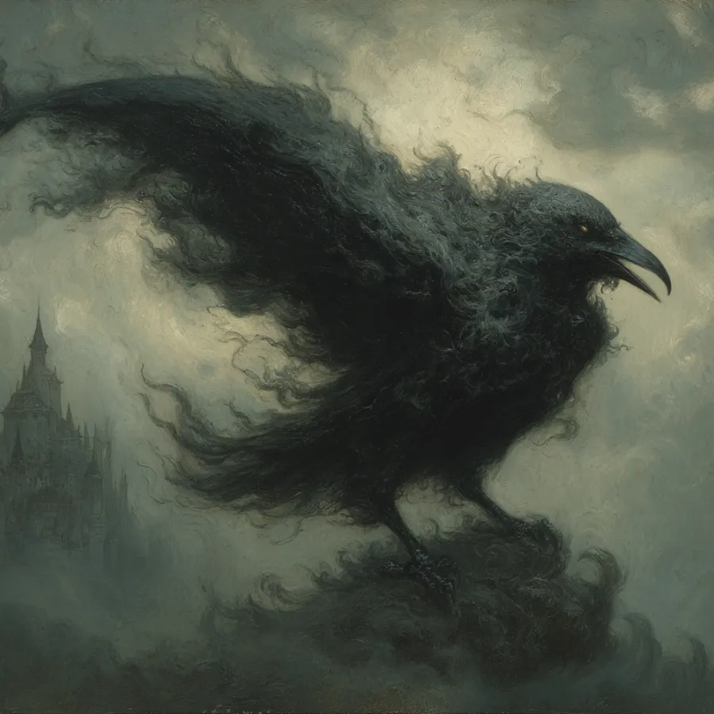

Umbra crow, smoke-born corvid, enigmatic crow, Umbral crow
The Umbral Raven is a mystical entity that accompanies Sylvie, a fire-wielding mage. This smoky, corvid-like being, larger than a typical crow, embodies the essence of the night with its dark plumage and ethereal presence. It communicates telepathically in the voice of a young man within Sylvie's mind, claiming to be a part of her. As Sylvie's familiar and scout, the raven is capable of traversing through shadows to relay information back to her, demonstrating an understanding of thoughts and intentions that allows it to respond to her mental cues.
The raven's counsel often provokes thought regarding Sylvie's relationships and decisions, hinting at deeper layers of influence and potential conflict within her group dynamics. It questioned Sylvie about her companions, suggesting they might be holding her back, and inquired who among them would make the best apprentice or "patsy." During their exploration of Grithmaar Deep, Sylvie sent the Umbral Raven ahead to scout enemy positions and terrain. The raven provided valuable reconnaissance until it encountered Mollthain's Warden lurking below. The Warden detected the raven and tore its essence apart, resulting in its destruction. Sylvie's connection to the raven allowed her to see through its eyes, but this connection was severed upon the raven's annihilation.
Recently, during a heist at Borek's residence in Ulmira’s Step, the Umbral Raven coalesced at the window as Sylvie and Heyou entered. It observed the surroundings, following Sylvie's mental commands. When Sylvie projected light through a keyhole to investigate a warded door, the crow remained silent yet attentive, indicating its awareness of the situation. The raven accompanied Sylvie and Heyou deeper into the building, providing an ominous presence that aligned with their dark mission.